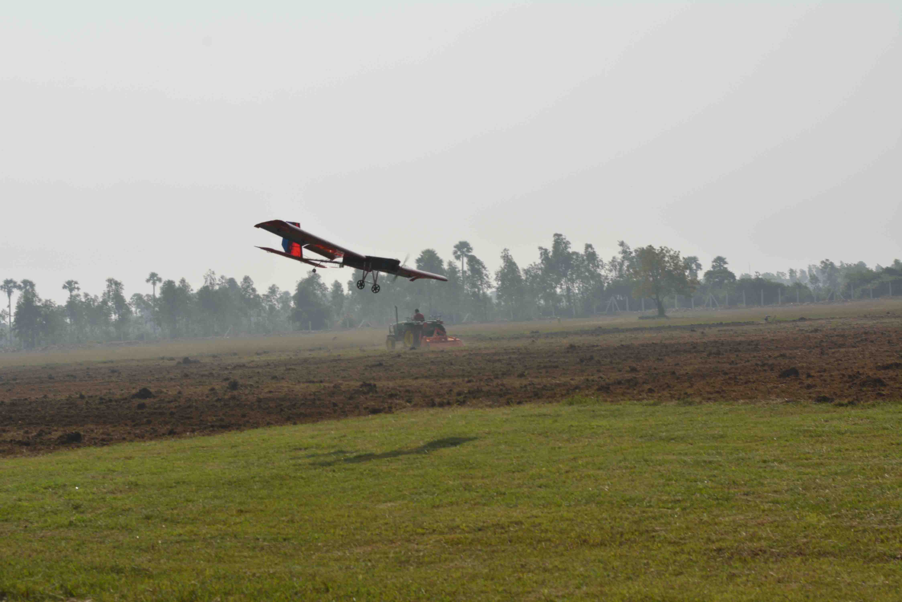
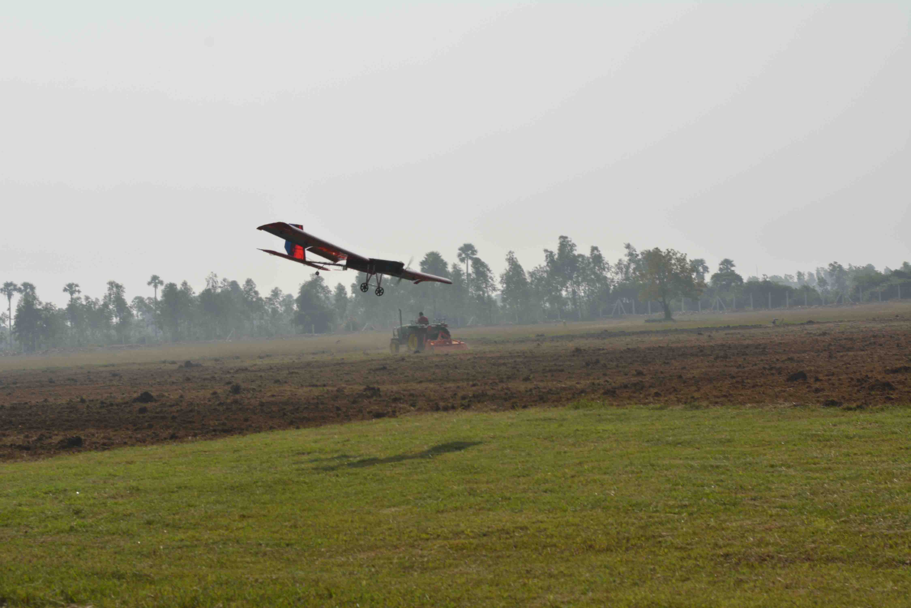
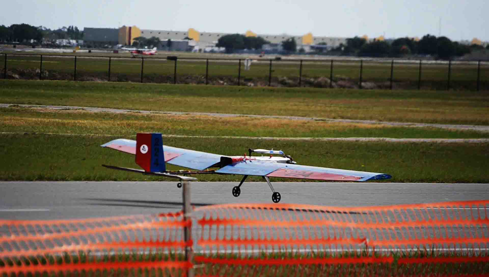
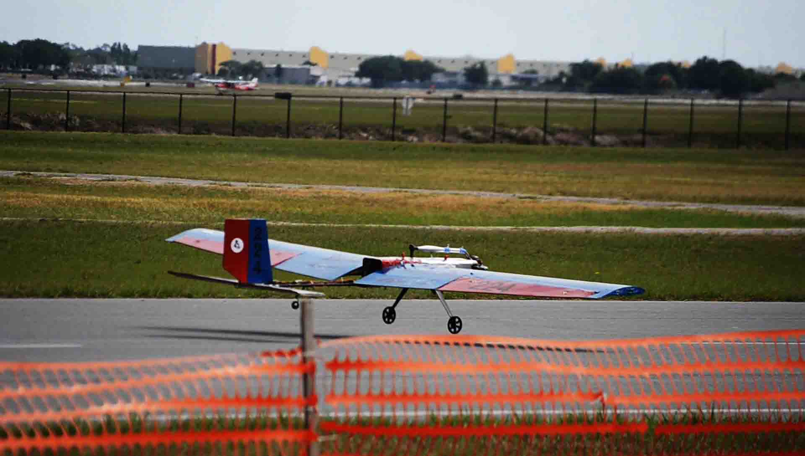

Schematic of the problem statement
Working towards contributing to the Space Industry
A Low-Pressure Micro-resistojet (LPM) is a type of in-space electrothermal propulsion system for satellites that works by heating low-pressure (50 to 300 Pa) fluid flowing through microchannels/slots (typically < 1 mm diameter) using resistive heating elements like thin-film Molybdenum. This thesis delineates a response surface based method to explore and optimize the cross-sectional design of microchannels, which, as documented in literature, have so far only been either rectangular or circular in shape.
Experimental studies place the efficiency of LPM systems at 25% which can be increased to 30% by reducing heat losses from the heat exchanger to the plenum. The concept is still in its early stages of development and therefore offers plenty of opportunities in the improvement of the propulsion system whether it be regarding the choice of propellant, design of propellant management system, choice of thruster materials or the design of the microchannels, which is the focus of this thesis. Usage of Response Surface Methodology (RSM) to optimize the design of a microchannel for greater thrust efficiency requires the following steps: Design of Experiment (DoE) run to select samples from the design space, performing experiments to evaluate the performance of selected samples, building a response surface (or surrogate model) from the generated data and finally using an optimization algorithm to find a high-efficiency design. In this thesis, these steps were performed using (respectively): Sobol Sequences, Direct Simulation Monte Carlo (DSMC) method using Sparc Industries' VSTRAP software, Convolutional Neural Network (CNN) and Genetic Algorithm (GA).
As a case study, the optimization was performed for Argon as the propellant, inlet pressure of 50 Pa, inlet temperature of 300 K and microchannel wall temperature of 600 K. The number of design parameters were set as 8 though the base geometry supports higher numbers as well. Using Sobol sequences to determine parametric values, 512 designs (termed polar designs) were generated. After DSMC simulations (validated with an experimental study in literature), the best performing design was found to have a thrust efficiency of 0.7019. 512 Rectangular designs were generated as well among which the best performing design had a thrust efficiency of 0.6566. From this dataset, the main takeaway is that the thrust efficiency peaks at a certain slot area and that small areal rectangular slots, common in literature, are not as efficient as broader slots with higher cross-sectional area (up to a limit). The CNN was trained on the polar dataset (CNN1) as well as the combination of both datasets (CNN2) to predict thrust efficiency from slot images. The predictions were, on average, within 10% from the simulation results. A GA run with 8-parameter geometry and with CNN1 as the response surface resulted in an optimum design with a thrust efficiency of 0.732. With CNN2, the optimized efficiency for 8-parameter and 15-parameter geometry was 0.7281 and 0.7455 respectively. However, on simulating the GA results it was found that CNN1 and CNN2 had overestimated the thrust efficiency by 11%. Thus in this case study, the most thrust efficient design is the best one from the polar dataset. The conclusion drawn is that a high number of designs generated using Sobol Sequences are enough to find the best performing design for a given set of input conditions i.e. choice of propellant, inlet pressure and temperature, and heaterchip temperature. As it seems that there is a strong correlation between slot area and performance, the number of designs to be generated can be based on whether it spans the allowable minimum to the allowable maximum area set by the designer. However, if the correlation between slot area and performance is not found after a DoE run for a different set of input conditions, then a CNN would have to be trained and used by the GA for design optimization.
The thesis concludes with a design recommendation for the shape of a microchannel that may on experimental testing result in a high performing thruster. Improvement in LPM technology will further the capabilities of PocketQube satellites (5 x 5 x 5 cm^3 form factor) and also of large satellites for which it could function as precise attitude control thrusters. Low pressure operation allows for a compact and lightweight propellant management system and the thruster's high thrust-to-power ratio gives it a major advantage over competing propulsion systems such as hall-effect and electrospray thrusters.
Thesis document
SPARC Industries develop plasma simulation software to simulate Plasma Propulsion systems for satellites. My work involved researching rarefied gas-surface scattering, and plasma-induced surface erosion models.
Reflection of Argon atoms (molecular beam represented by the red line) by a Platinum surface at 300K
The project consisted of coming up with a concept design of a solar propulsion thermal system satisfying the requirements of the LUMIO (LUnar Meteoroid Impacts Observer) mission which is an ESA selected proposal for a CubeSat mission to a halo orbit at Earth–Moon second Lagrange point to observe, quantify, and characterize meteoroid impacts on the lunar far side. The project report was a deliverable for the Micropropulsion [AE4S07] course at TU Delft.
Trade-offs were performed on several sub-system concepts to select a set best satisfying the requirements. Operation of the propulsion system was described and whenever possible, a trace to a requirement was included. Iterations were performed over a parametric range to come up with parameters that yielded optimum mass and volume. Corresponding to these parameters results such as total mass, total volume, and nozzle shape were determined. Sizing for an equivalent H2O2 monopropellant system was also performed over the same parametric range for comparison.
Schematic of the conceptualized solar thermal propulsion system
A computational system was developed linking the weather simulation model, WRF, and the CFD software, Star-CCM+, to assess the affect of a weather system on an aircraft. A system demonstration was carried out using a case study of a scenic mountain flight on a Beechcraft 1900D aircraft from Kathmandu to Mt. Everest and back on the 9th of July 2018 2115 hr UTC. The project demonstrates the importance of such a system and how it can be used by the aviation industry to optimize flight planning and ultimately save cost and lives.
Schematic of the problem statement
Static bending and elastic stability analyses were carried out on functionally graded graphene platelets reinforced porous nanocomposite curved beams using higher order shear deformation theory that accounts for through-thickness stretching effects. The structural characteristics of curved beam, constituting of porous metal foam and graphene platelets as nanofillers for reinforcement, are evaluated considering different dispersion patterns for the graphene and porosity, shallowness of the curved beam, thickness ratio, and platelet geometry.

Cases of porosity and GPL distribution types that were considered in the study
An orbital exploration mission of the Pluto-Charon system was proposed. For the competition, teams had to design a spacecraft and mission that can achieve orbital insertion into the Pluto-Charon system with a primary mission length of no more than 25 years with a minimum of a one year Pluto orbital duration.
My work primarily involved selecting the propulsion and power systems for the spacecraft which involved the development of a script to perform trade-offs between several commercial ion-propulsion engines constrained to the mission's requirement.

Screenshot of the GUI
Composite plates subjected to thermal loads were numerically analysed using finite element methods based on first-order shear deformation theory. Parameters considered include - boundary condition, curvilinear fibre angles at the centre and edge of the lamina, lay-up, thickness ratio, coefficients of thermal expansion, and modular ratio.

Graphical abstract of the project
Led the team, Assailing Falcons , comprising of 32 students to design and fabricate an advanced class aircraft for the 2018 SAE Aerodesign competition.
Out of 75 teams, 18 participated in the "Advance" category. Results: Design Report - 8th | Presentation - 6th | Overall - 6th
 

I worked on the advanced class aircraft being developed by the student team, Assailing Falcons. My responsibilities consisted of
 

Control rotation of virtual object using an MPU6050 sensor. Git Link.
Anirudh Bharath, Ganapathi Manickam, Anant Chandra, Olivier Polit | Composite Structures | Elsevier | 2019
Dynamic characteristics of functionally graded graphene reinforced porous nanocomposite curved beams based on trigonometric shear deformation theory with thickness stretch effectGanapathi Manickam, Anirudh Bharath, Anant Chandra, Olivier Polit | Mechanics of Advanced Materials and Structures | Taylor & Francis | 2019
Functionally graded graphene reinforced porous nanocomposite curved beams: Bending and elastic stability using a higher-order model with thickness stretch effectOlivier Polit, Anant Chandra, Anirudh Bharath, Ganapathi Manickam | Composites Part B: Engineering | Elsevier | 2019
Thermoelastic Stability Behavior of Curvilinear Fiber‐Reinforced Composite Laminates With Different Boundary ConditionsGanapathi Manickam, Anirudh Bharath, Aditya Narayan Das, Anant Chandra, Pradyumna Barua | Polymer Composites | John Wiley & Sons | 2018
Thermal buckling behaviour of variable stiffness laminated composite platesGanapathi Manickam, Anirudh Bharath, Aditya Narayan Das, Anant Chandra, Pradyumna Barua | Materials Today Communications | Elsevier | 2018
Anant Chandra, Satyajit Ghosh, Neelay Doshi, Sushrut Deshpande, Siddharth Gumber | Pure and Applied Geophysics | Springer | 2020
Assessing flight path vulnerabilities over Himalayan terrainSushrut Deshpande, Neelay Doshi, Anant Chandra, and Satyajit Ghosh | European Geosciences Union Conference | 2019
Anant Chandra and Satyajit Ghosh | AI & Society | Springer | 2019